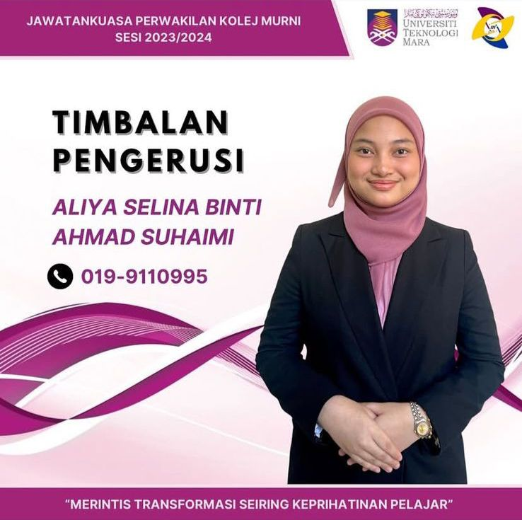
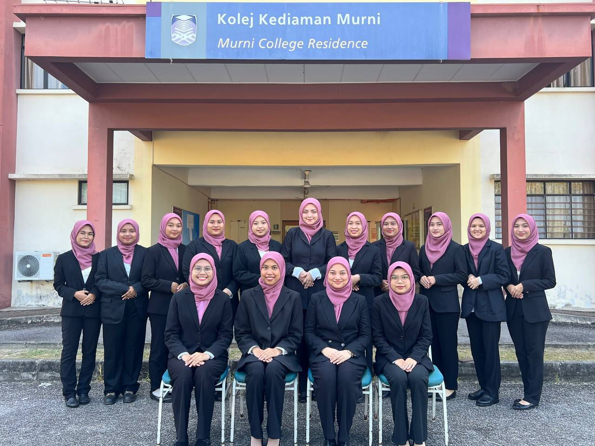
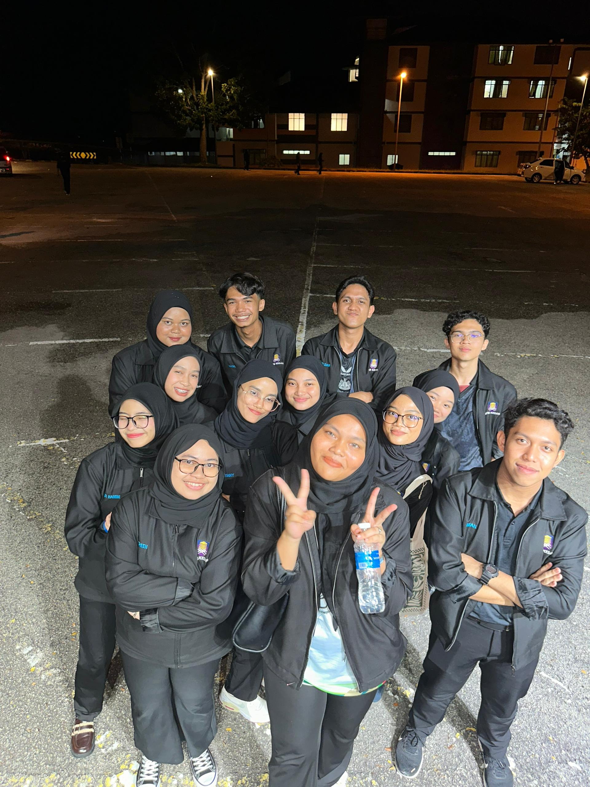
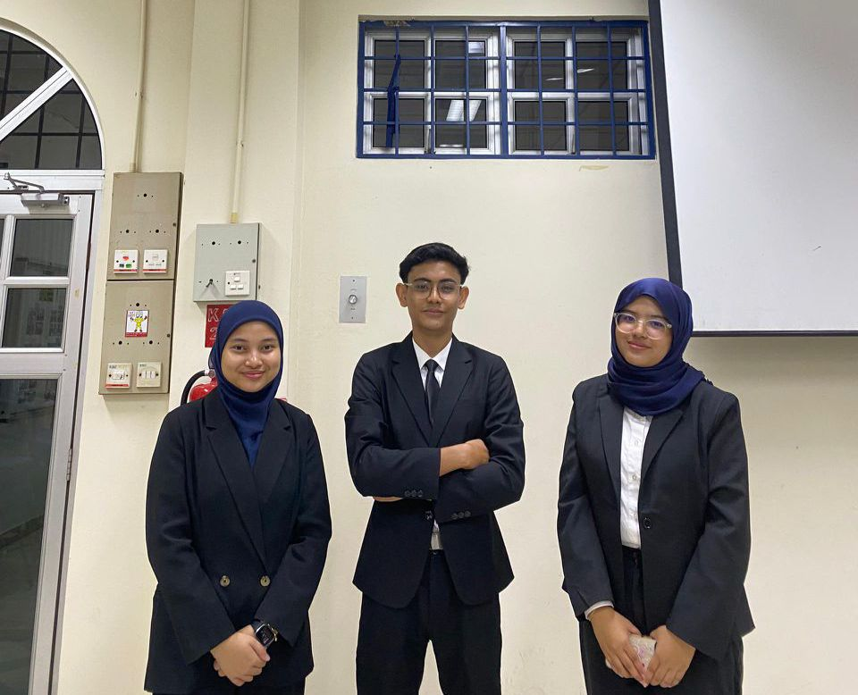
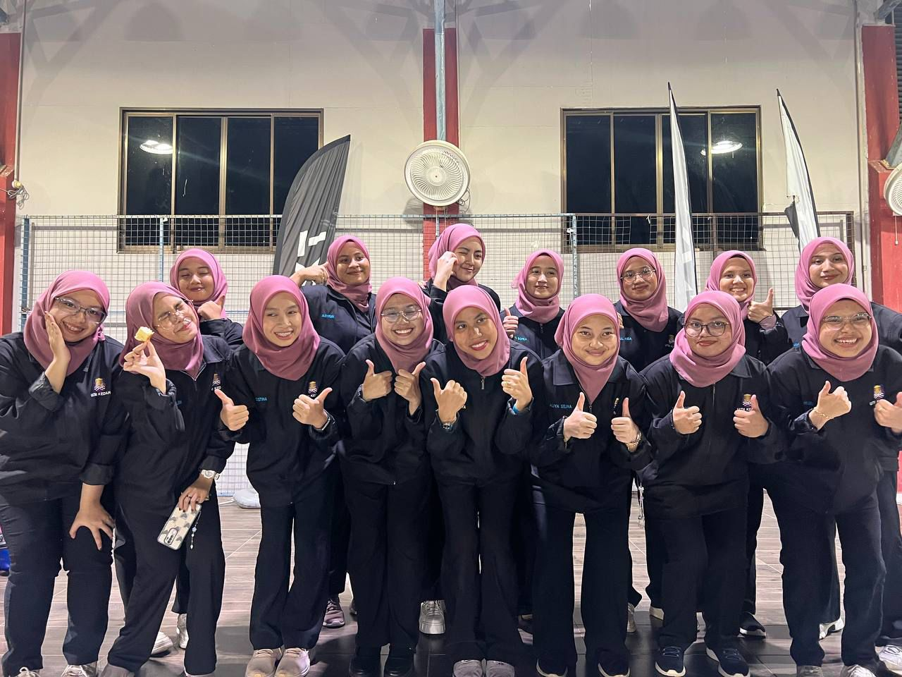
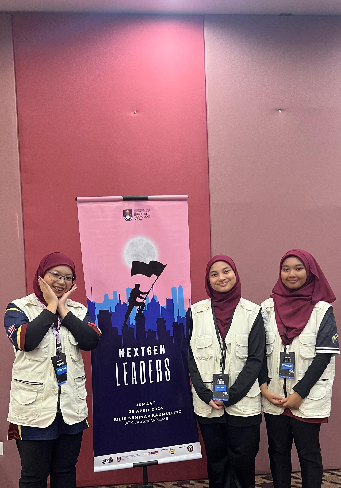
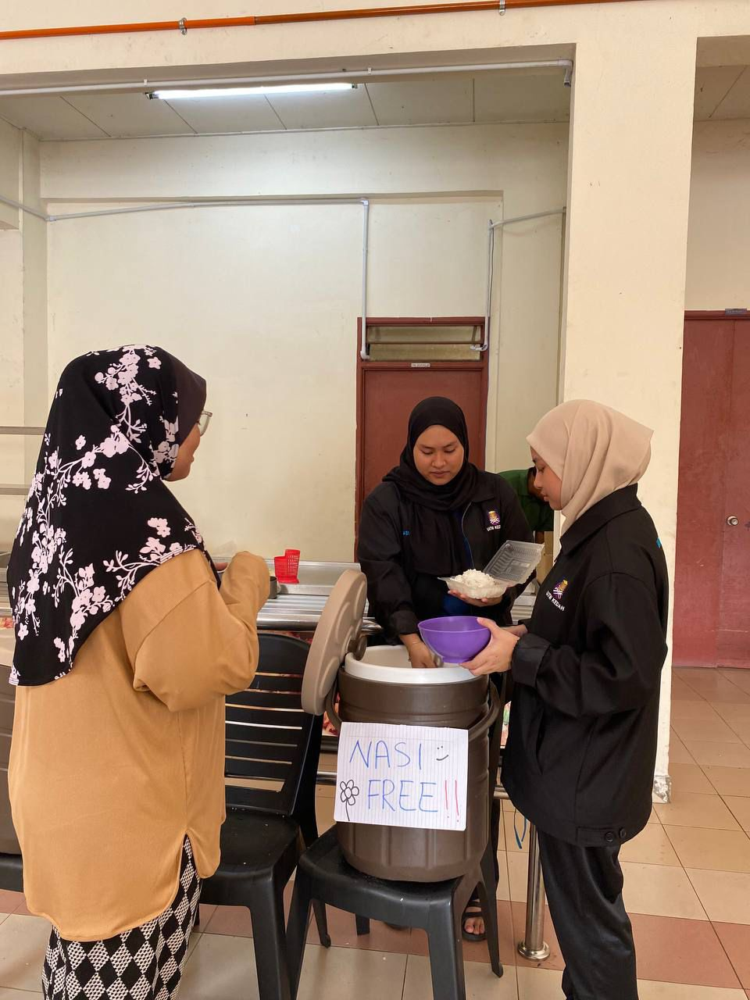
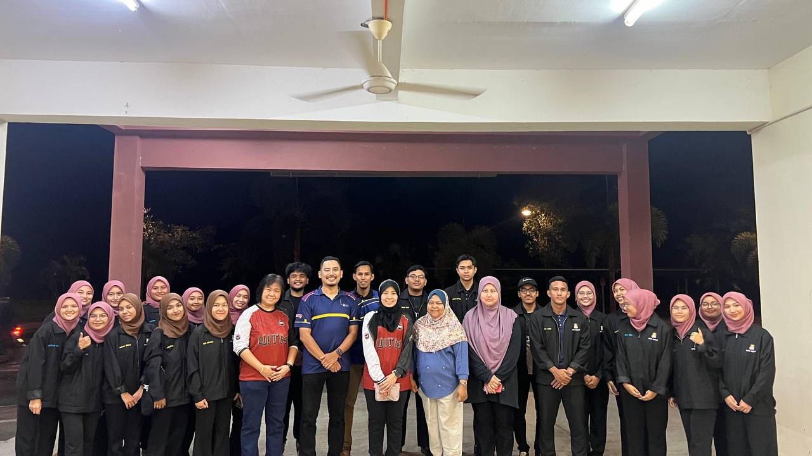

The Steps That Shaped Me
Welcome to the Land of Lessons Learned, where my past adventures, projects, and a little sprinkle of chaos all come together. Think of this as my highlight reel, minus the bloopers (or maybe with a few... for charm).
My journey has been a mix of rolling up my sleeves, learning on the fly, and tackling challenges with equal parts enthusiasm and “let’s see how this goes.” From big wins to “character-building” moments, every step has been an opportunity to grow, adapt, and make my mark.
So, dive in and take a look at what I’ve been up to! Whether it’s building skills, chasing goals, or just figuring things out as I go, these experiences have been the stepping stones on my path. Bonus fun fact: Did you know sloths can hold their breath longer than dolphins? Just like me when I’m deep in the zone! 🌟
| Vice President of Murni College Residence Club - JPKNR |
|  |
| As Vice President, I wasn't just organizing events and managing meetings, I was building a community where everyone felt heard. From brainstorming initiatives to mediating Wi-Fi disputes, I led with a positive, can-do attitude. |
| Together We Lead: A Year with the Best Team |
|  |
| As Vice President, I worked with a great team to organize events and create a welcoming, inclusive community for students. Through brainstorming, planning, and late-night meetings, we made the year memorable and rewarding. |
| Protocol Management - College On Fire |
|  |
| Organizing a fire drill was no routine task. I coordinated hundreds of students and staff with precision, ensuring everyone knew their role in this "College on Fire" simulation, smooth and stress-free. |
| Invitation Management - Financial Insight |
|  |
| My job wasn’t just sending out invitations, it was ensuring every student and VIPs felt welcome at this essential program. |
| Protocol Management - Project 90's |
 |
| In the spirit of the 90s, I took charge of Project 90s, managing schedules, hosting dignitaries, and bringing the decade’s essence to life with creativity and flair. |
| Technical Management - Murnipreneur |
 |
| I was the tech expert behind this event, handling everything from preventing mic issues to adjusting projectors during presentations. I made sure the tech ran seamlessly from start to finish. |
| Invitation Management - Roll Call |
|  |
| Invitations are more than just messages, they set the tone for the event. I carefully handled the guest list, organizing VIPs and ensuring everyone had their pass to an unforgettable evening. |
| Technical Management - Next Gen Leaders |
|  |
| Every great event needs a tech wizard, and that was me. From keeping mics working to fine-tuning projectors mid-presentation, I ensured everything ran smoothly. |
| Supporting Students |
|  |
| I even got to hand out free rice! Coordinating aid for students in need, while ensuring their dignity and support, was both humbling and rewarding. |
| A Visit of Impact |
|  |
| A visit from higher-ups to assess the students and amenities made the experience even more exciting. |
Back to theee Top